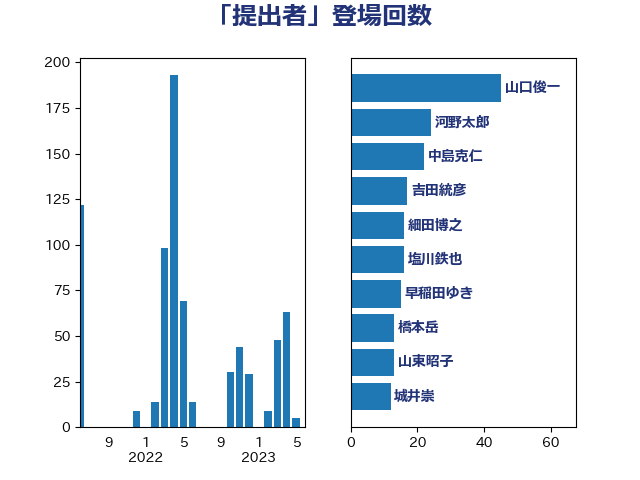

単語「提出者」

| 山口俊一 | 自由民主党 | 45 回 |
| 河野太郎 | 自由民主党 | 24 回 |
| 中島克仁 | 立憲民主党 | 22 回 |
| 吉田統彦 | 立憲民主党 | 17 回 |
| 細田博之 | 自由民主党 | 16 回 |
| 塩川鉄也 | 日本共産党 | 16 回 |
| 早稲田ゆき | 立憲民主党 | 15 回 |
| 橋本岳 | 自由民主党 | 13 回 |
| 山東昭子 | 自由民主党 | 13 回 |
| 城井崇 | 立憲民主党 | 12 回 |
| 上野賢一郎 | 自由民主党 | 12 回 |
| 足立康史 | 日本維新の会 | 11 回 |
| 市村浩一郎 | 日本維新の会 | 11 回 |
| 木原稔 | 自由民主党 | 9 回 |
| 尾辻秀久 | 無所属 | 9 回 |
| 平口洋 | 自由民主党 | 8 回 |
| 山田宏 | 自由民主党 | 8 回 |
| 井坂信彦 | 立憲民主党 | 8 回 |
| 野間健 | 立憲民主党 | 7 回 |
| 赤羽一嘉 | 公明党 | 7 回 |
| 源馬謙太郎 | 立憲民主党 | 7 回 |
| 山田勝彦 | 立憲民主党 | 7 回 |
| 中根一幸 | 自由民主党 | 7 回 |
| 鈴木馨祐 | 自由民主党 | 6 回 |
| 道下大樹 | 立憲民主党 | 6 回 |
| 浮島智子 | 公明党 | 6 回 |
| 松沢成文 | 日本維新の会 | 6 回 |
| 岡本あき子 | 立憲民主党 | 6 回 |
| 山岸一生 | 立憲民主党 | 6 回 |
| 落合貴之 | 立憲民主党 | 5 回 |
| 義家弘介 | 自由民主党 | 5 回 |
| 笹川博義 | 自由民主党 | 5 回 |
| 櫻井周 | 立憲民主党 | 5 回 |
| 根本匠 | 自由民主党 | 5 回 |
| 柚木道義 | 立憲民主党 | 5 回 |
| 山田賢司 | 自由民主党 | 5 回 |
| 小野泰輔 | 日本維新の会 | 5 回 |
| 大西英男 | 自由民主党 | 5 回 |
| 塚田一郎 | 自由民主党 | 5 回 |
| 古屋範子 | 公明党 | 5 回 |
| 佐々木さやか | 公明党 | 5 回 |
| 鎌田さゆり | 立憲民主党 | 4 回 |
| 金子恵美 | 立憲民主党 | 4 回 |
| 遠藤良太 | 日本維新の会 | 4 回 |
| 逢沢一郎 | 自由民主党 | 4 回 |
| 藤岡隆雄 | 立憲民主党 | 4 回 |
| 稲富修二 | 立憲民主党 | 4 回 |
| 石井正弘 | 自由民主党 | 4 回 |
| 矢倉克夫 | 公明党 | 4 回 |
| 森山浩行 | 立憲民主党 | 4 回 |
| 新藤義孝 | 自由民主党 | 4 回 |
| 新妻秀規 | 公明党 | 4 回 |
| 打越さく良 | 立憲民主党 | 4 回 |
| 平林晃 | 公明党 | 4 回 |
| 山井和則 | 立憲民主党 | 4 回 |
| 小宮山泰子 | 立憲民主党 | 4 回 |
| 宮崎政久 | 自由民主党 | 4 回 |
| 伊藤忠彦 | 自由民主党 | 4 回 |
| 上月良祐 | 自由民主党 | 4 回 |
| 階猛 | 立憲民主党 | 3 回 |
| 阿部知子 | 立憲民主党 | 3 回 |
| 関芳弘 | 自由民主党 | 3 回 |
| 西村康稔 | 自由民主党 | 3 回 |
| 竹内譲 | 公明党 | 3 回 |
| 稲田朋美 | 自由民主党 | 3 回 |
| 神谷裕 | 立憲民主党 | 3 回 |
| 渡辺周 | 立憲民主党 | 3 回 |
| 海江田万里 | 立憲民主党 | 3 回 |
| 浅野哲 | 国民民主党 | 3 回 |
| 森田俊和 | 立憲民主党 | 3 回 |
| 梅谷守 | 立憲民主党 | 3 回 |
| 岸真紀子 | 立憲民主党 | 3 回 |
| 山添拓 | 日本共産党 | 3 回 |
| 小里泰弘 | 自由民主党 | 3 回 |
| 宮本徹 | 日本共産党 | 3 回 |
| 宮内秀樹 | 自由民主党 | 3 回 |
| 堤かなめ | 立憲民主党 | 3 回 |
| 國重徹 | 公明党 | 3 回 |
| 加藤勝信 | 自由民主党 | 3 回 |
| 伊藤岳 | 日本共産党 | 3 回 |
| 三ッ林裕巳 | 自由民主党 | 3 回 |
| あかま二郎 | 自由民主党 | 3 回 |
| 高鳥修一 | 自由民主党 | 2 回 |
| 高木毅 | 自由民主党 | 2 回 |
| 長谷川岳 | 自由民主党 | 2 回 |
| 鈴木庸介 | 立憲民主党 | 2 回 |
| 谷田川元 | 立憲民主党 | 2 回 |
| 西村智奈美 | 立憲民主党 | 2 回 |
| 蓮舫 | 立憲民主党 | 2 回 |
| 緑川貴士 | 立憲民主党 | 2 回 |
| 米山隆一 | 立憲民主党 | 2 回 |
| 福岡資麿 | 自由民主党 | 2 回 |
| 田村貴昭 | 日本共産党 | 2 回 |
| 田中健 | 国民民主党 | 2 回 |
| 湯原俊二 | 立憲民主党 | 2 回 |
| 武部新 | 自由民主党 | 2 回 |
| 森英介 | 自由民主党 | 2 回 |
| 本庄知史 | 立憲民主党 | 2 回 |
| 木原誠二 | 自由民主党 | 2 回 |
| 奥野総一郎 | 立憲民主党 | 2 回 |
| 堀場幸子 | 日本維新の会 | 2 回 |
| 吉田はるみ | 立憲民主党 | 2 回 |
| 古川禎久 | 自由民主党 | 2 回 |
| 北側一雄 | 公明党 | 2 回 |
| 佐藤茂樹 | 公明党 | 2 回 |
| 中野洋昌 | 公明党 | 2 回 |
| 中司宏 | 日本維新の会 | 2 回 |
| 鬼木誠 | 立憲民主党 | 1 回 |
| 高橋千鶴子 | 日本共産党 | 1 回 |
| 高橋光男 | 公明党 | 1 回 |
| 馬場伸幸 | 日本維新の会 | 1 回 |
| 青柳陽一郎 | 立憲民主党 | 1 回 |
| 青柳仁士 | 日本維新の会 | 1 回 |
| 青山大人 | 立憲民主党 | 1 回 |
| 阿部司 | 日本維新の会 | 1 回 |
| 鈴木義弘 | 国民民主党 | 1 回 |
| 野田国義 | 立憲民主党 | 1 回 |
| 逢坂誠二 | 立憲民主党 | 1 回 |
| 近藤和也 | 立憲民主党 | 1 回 |
| 赤嶺政賢 | 日本共産党 | 1 回 |
| 藤井比早之 | 自由民主党 | 1 回 |
| 菊田真紀子 | 立憲民主党 | 1 回 |
| 荒井優 | 立憲民主党 | 1 回 |
| 美延映夫 | 日本維新の会 | 1 回 |
| 篠原孝 | 立憲民主党 | 1 回 |
| 福島伸享 | 無所属 | 1 回 |
| 神津たけし | 立憲民主党 | 1 回 |
| 石垣のりこ | 立憲民主党 | 1 回 |
| 白石洋一 | 立憲民主党 | 1 回 |
| 田嶋要 | 立憲民主党 | 1 回 |
| 田名部匡代 | 立憲民主党 | 1 回 |
| 牧義夫 | 立憲民主党 | 1 回 |
| 熊田裕通 | 自由民主党 | 1 回 |
| 渡辺創 | 立憲民主党 | 1 回 |
| 浜田聡 | NHK党 | 1 回 |
| 河野義博 | 公明党 | 1 回 |
| 沢田良 | 日本維新の会 | 1 回 |
| 池下卓 | 日本維新の会 | 1 回 |
| 森屋宏 | 自由民主党 | 1 回 |
| 根本幸典 | 自由民主党 | 1 回 |
| 松島みどり | 自由民主党 | 1 回 |
| 杉本和巳 | 日本維新の会 | 1 回 |
| 末次精一 | 立憲民主党 | 1 回 |
| 新垣邦男 | 立憲民主党 | 1 回 |
| 徳永エリ | 立憲民主党 | 1 回 |
| 後藤祐一 | 立憲民主党 | 1 回 |
| 川田龍平 | 立憲民主党 | 1 回 |
| 岩屋毅 | 自由民主党 | 1 回 |
| 山崎誠 | 立憲民主党 | 1 回 |
| 守島正 | 日本維新の会 | 1 回 |
| 大河原まさこ | 立憲民主党 | 1 回 |
| 大島敦 | 立憲民主党 | 1 回 |
| 大塚拓 | 自由民主党 | 1 回 |
| 塩村あやか | 立憲民主党 | 1 回 |
| 城内実 | 自由民主党 | 1 回 |
| 吉川沙織 | 立憲民主党 | 1 回 |
| 吉川元 | 立憲民主党 | 1 回 |
| 古賀篤 | 自由民主党 | 1 回 |
| 古賀友一郎 | 自由民主党 | 1 回 |
| 原口一博 | 立憲民主党 | 1 回 |
| 勝目康 | 自由民主党 | 1 回 |
| 勝俣孝明 | 自由民主党 | 1 回 |
| 佐々木紀 | 自由民主党 | 1 回 |
| 伊藤俊輔 | 立憲民主党 | 1 回 |
| 伊東良孝 | 自由民主党 | 1 回 |
| 伊佐進一 | 公明党 | 1 回 |
| 中谷一馬 | 立憲民主党 | 1 回 |
| 三木圭恵 | 日本維新の会 | 1 回 |
| こやり隆史 | 自由民主党 | 1 回 |
| おおつき紅葉 | 立憲民主党 | 1 回 |